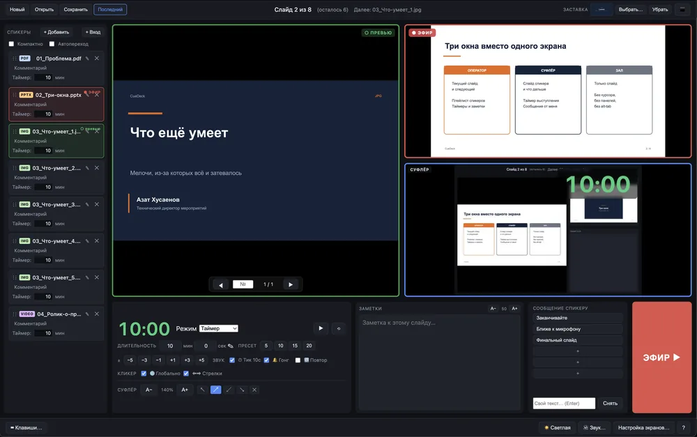
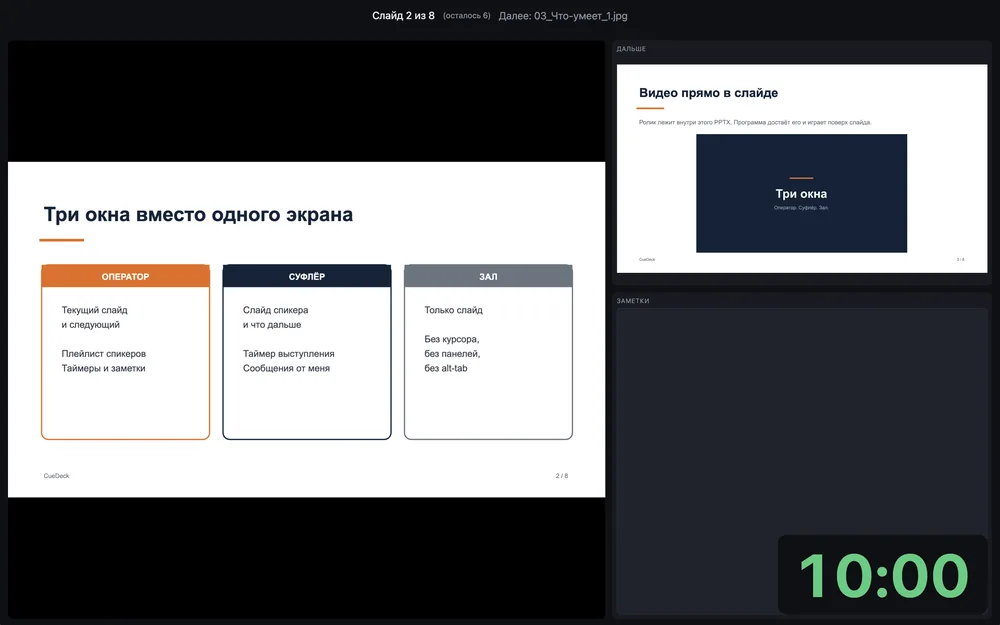
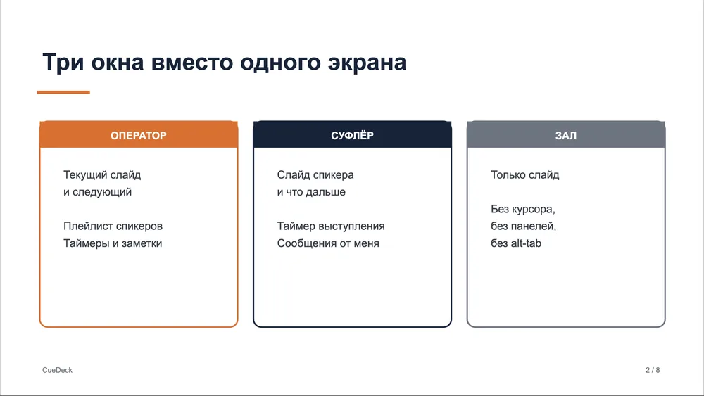
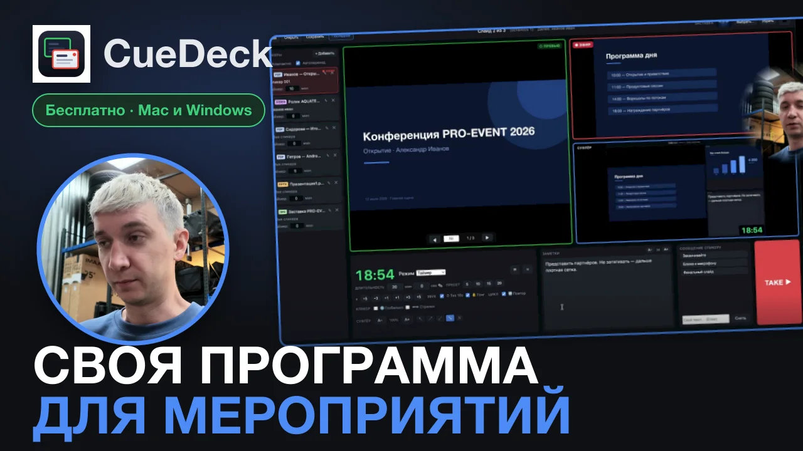

Оператор
Текущий слайд и следующий, плейлист спикеров, таймер, заметки и монитор того, что реально уходит в зал.
Бесплатно · Mac и Windows
Инструмент оператора презентаций на живых мероприятиях. Все спикеры в одной очереди, зал видит только слайд.
Обычная смотрелка показывает одно и то же и вам, и залу. Здесь у каждого своё окно: оператор видит служебное, спикер — своё, зал — только слайд.

Текущий слайд и следующий, плейлист спикеров, таймер, заметки и монитор того, что реально уходит в зал.

Спикеру — его слайд, следующий, таймер выступления и сообщения от оператора. Оборачиваться на экран не нужно.

Только слайд во весь экран. Ни курсора, ни панелей, ни рабочего стола, ни alt-tab между файлами.
Всё, что делалось под живые прогоны, а не под демонстрацию возможностей.
Все выступления в одной очереди. Файл кидается перетаскиванием, порядок меняется мышкой. Флешка за две минуты до выхода — просто ещё одна строка.
PDF, PowerPoint и Keynote, изображения, видео. Разные форматы лежат в одной очереди и открываются одинаково.
Ролик, вшитый в слайд PowerPoint, играет поверх слайда. Анимации «по клику» разворачиваются в шаги и листаются кликером.
Обратный отсчёт, секундомер или часы. Пресеты по правой кнопке, размер и угол на суфлёре настраиваются. Зал таймер не видит.
Шесть готовых сообщений на суфлёр в одно нажатие: «две минуты», «закругляйтесь». Плюс заметки к выступлению.
Картинка с HDMI-капчера, камеры или айфона по Continuity — как обычный элемент плейлиста. Устройство удерживается, чтобы не моргало при переключении.
Отдельный выход в наушники: послушать принесённый ролик до того, как он уйдёт в зал. Индикаторы уровня по эфиру и превью.
Ключевой визуал между выступлениями одной кнопкой — вместо чёрного экрана и вместо рабочего стола.
Плейлист сохраняется файлом проекта. «Собрать проект в папку» кладёт рядом все материалы — папка переезжает между машинами целиком.
Подробный разбор всех окон и настроек — как это работает на прогоне.

Откроется на YouTube — 40 минут разбора. Ссылка на ролик
Отдельные сборки для Apple Silicon и Intel. Программа подписана ad-hoc — при первом запуске откройте её через правую кнопку → «Открыть».
64-битная Windows 10 или 11. Архив распаковывается в любую папку, установка не нужна.
Нужен установленный LibreOffice — через него конвертируются PPTX, PPT, ODP и KEY. Для PDF, картинок и видео он не требуется.